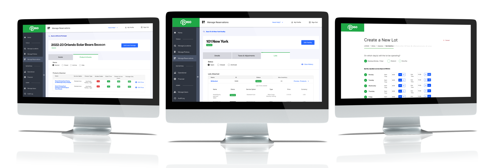
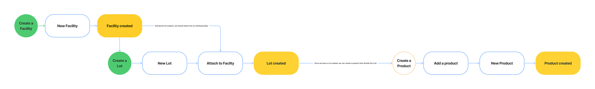
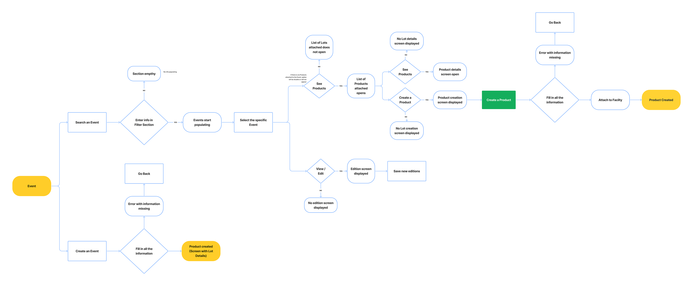
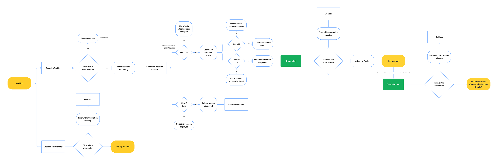
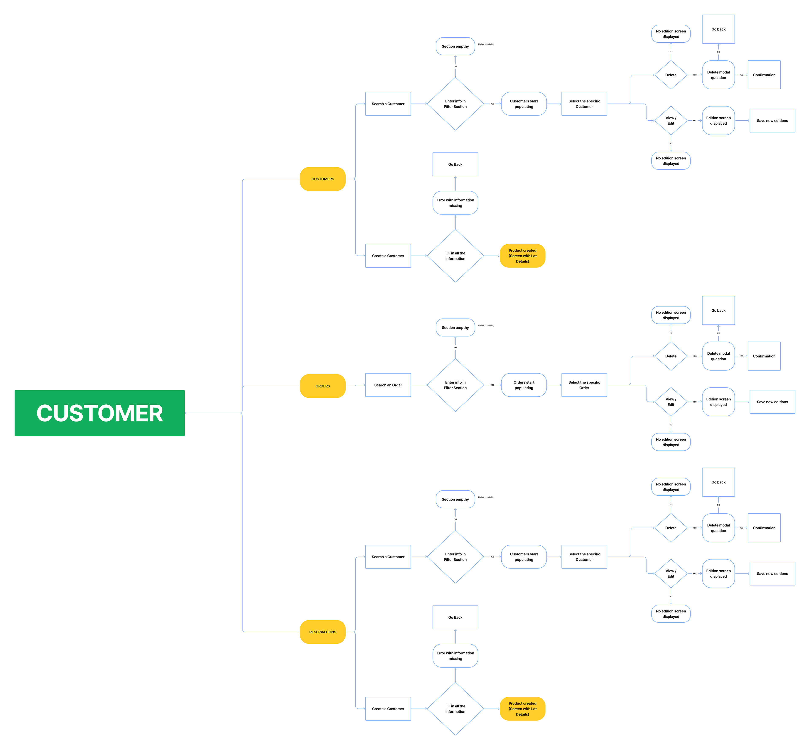
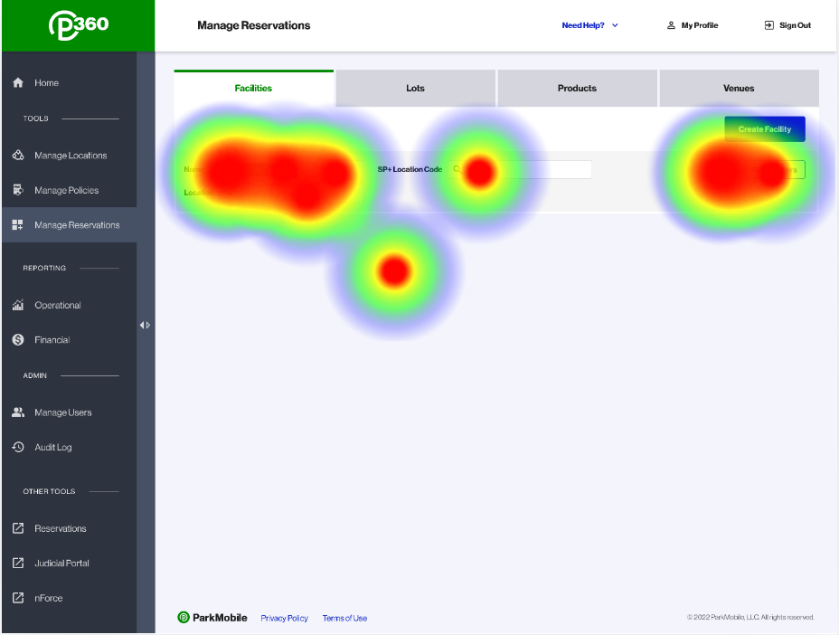
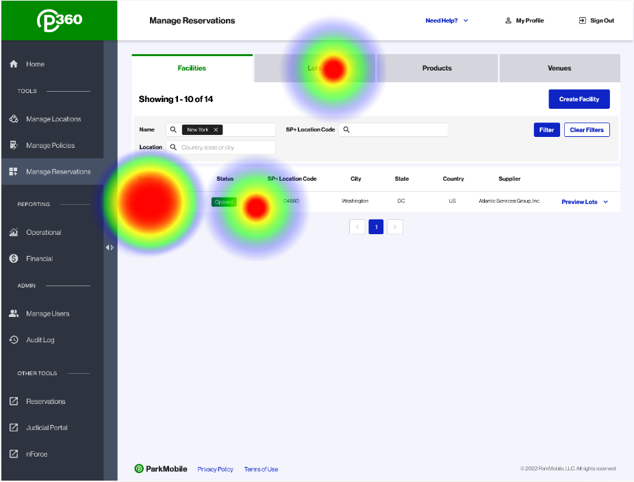
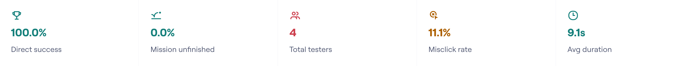
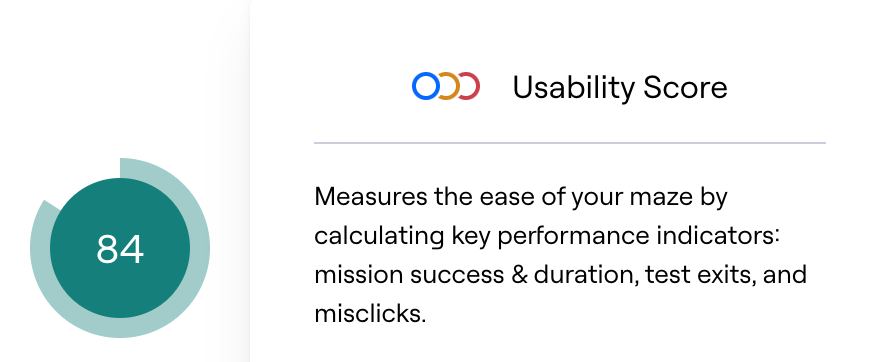

Senior Product Designer · B2B Enterprise · SaaS
Complex systems,
clear experiences.
Three case studies spanning admin portals, partner management platforms, and AI-driven adaptive experiences — each showing end-to-end product design from discovery to launch.
PM360: ParkMobile
Admin Portal
Migrating and redesigning the internal administration tool for ParkMobile (EasyPark Group) — a platform used by operations teams to manage parking slots, partners, pricing, locations, inventory, and reporting at scale.
PM360 is the internal admin portal used by EasyPark Group's operations and partner teams to manage the full lifecycle of digital parking. Behind the consumer-facing ParkMobile app that millions of users rely on to pay for parking, there is a complex set of administrative workflows that PM360 enables.
Modernize administrative processes through a revamped admin portal. Optimize task management, data visualization, and overall UX to boost productivity and minimize user friction for internal teams.
Effortlessly navigate and use the portal for day-to-day administrative duties. An intuitive interface with streamlined workflows that lets users accomplish tasks efficiently without usability barriers.

The project required a rigorous discovery phase: understanding an existing tool being deprecated, aligning with multiple stakeholders, and documenting every critical flow before a single wireframe was drawn.
Conducted in-depth discussions with project sponsors, product managers, developers, and end-users — the internal EasyPark operations teams who relied on the legacy portal daily. The goal was to surface objectives, pain points, and expectations that wouldn't appear in a requirements document.
Conducted a thorough evaluation of the existing tool's features to identify what was critical to migrate, what could be improved, and what should be removed entirely. This prevented carrying forward technical debt disguised as features.

After analyzing each feature in scope, new user flows were developed to understand the revised relationships between system entities. Five properties made this work essential to the project's success:
Mapping the sequence of actions, decision points, and potential bottlenecks before touching the UI ensured the redesign addressed real behavior, not assumed behavior.
Visualizing the full flow surface where complex processes could be simplified, steps reduced, or navigation consolidated — especially in high-frequency admin tasks.
Flows served as a validation artifact: before building screens, we could assess whether proposed designs actually supported the user's task goals at each step.
User flows provided a shared language for design, development, and product — reducing ambiguity in handoff and alignment sessions with stakeholders.
The flows became a living framework — updated as usability testing surfaced new findings, ensuring the design evolved with real evidence rather than assumption.




Usability testing sessions were conducted with internal EasyPark users — the actual operators who would use PM360 daily. Three rounds of testing were performed, with iterative design changes applied between each round.
A score of 84/100 indicates strong overall usability. Two additional testing rounds followed to address identified friction points, continuing the iterative design process.




Analyzed feedback across navigation, task completion, instruction clarity, and accessibility to target the highest-impact changes first.
Ranked identified issues by user impact. Focused on high-frequency admin tasks where friction had the greatest compounding effect on productivity.
Applied changes, retested, and validated that adjustments resolved the identified issues without introducing new friction elsewhere in the system.
The final PM360 features clear navigation, efficient task management, and a consistent visual language built on a shared core UI library developed in collaboration with the design team.
Built in collaboration with the design team to ensure consistency, efficiency, and scalability. Standardized components eliminate design inconsistency across modules and speed up developer implementation significantly.


PartnerHub —
Partner Relationship Management
Designing the end-to-end UX of a PRM SaaS platform for a fintech operating across Latin America — centralizing partner onboarding, performance tracking, commissions, and resource management in one place.
A Latin American fintech operating across multiple countries depended on brokers, commercial agents, and strategic partners to generate a significant portion of its sales. The problem: every team managed partner data differently — email threads, shared spreadsheets, and internal tools that didn't talk to each other. There was no single source of truth for partner status, certifications, contracts, commissions, or open commercial opportunities.
"Allow any partner to onboard, train, sell, and monitor their performance from a single place." — product vision defined during discovery
The platform was structured around five functional areas, each designed to serve both partner-facing and admin-facing needs within the same system.
A progress-based guided experience covering registration, document upload, automatic validation, e-signature, and an activation checklist. Partners could see exactly what was missing and why — reducing back-and-forth with operations teams entirely.
A personalized view per partner with certification status, generated sales, open opportunity pipeline, accumulated commissions, and pending activities. Prioritized actionable indicators over complex historical data.
A centralized library of commercial materials, presentations, brand assets, training videos, and product guides. Replaced a fragmented multi-platform setup and significantly reduced support dependency.
Partner rankings, quarterly targets, bonuses, and certification levels — designed to transform complex metrics into clear, motivating indicators. The system made performance visible and competitive without being opaque.
Internal-facing module for user and document management, commission configuration, partner segmentation, and executive reporting. Designed for operations and commercial leadership teams.
Constructed a reusable component library covering data tables, filters, progress trackers, KPI cards, workflow builders, and notification patterns. Reduced design and development time by approximately 40% across modules.
95% of partners completed the onboarding flow without any assistance during validation sessions.
Average time to locate relevant information dropped from 4 minutes to under 30 seconds.
Validated with 15 partners and 10 internal users across the full platform scope.
Beyond designing screens, the challenge was redefining how the organization collaborated with its partner ecosystem — transforming a fragmented, manual process into a scalable, measurable, growth-oriented experience.
KOVA NIMBVX PRO —
Adaptive PDP System
An experimental eCommerce product page that adapts its layout in real time based on user behavioral profiling — built using Figma MCP integration, Claude Code, and Node.js. The analytics dashboard below shows the performance data from the adaptive system.
The dashboard below shows real analytics from the adaptive layout system across 27,450 sessions. The adaptive approach delivered an average 82% conversion rate lift versus a single default PDP running concurrently.